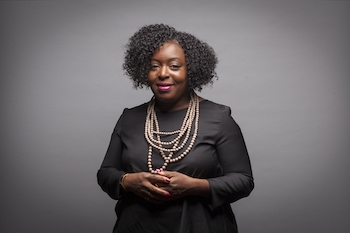

Leaders expanding access, representation, and inclusion in tech.

Kimberly Bryant
Kimberly Bryant — Founder of Black Girls Code
Kimberly Bryant is a technology engineer and founder of Black Girls Code, a nonprofit that works
to increase the number of girls of color entering technology fields. She created the organization after noticing
her daughter was often the only Black girl in coding spaces, showing how representation affects who feels welcome.
Founded in 2011, Black Girls Code offers workshops, camps, and programs teaching skills like programming, robotics,
and web development. Bryant's goal is not only technical skill-building, but also confidence and belonging for students
historically underrepresented in STEM.
Her work connects to implicit bias and intersectionality because unequal access and assumptions can shape who is encouraged,
supported, and seen as “belonging” in tech.
Dr. Kamille Richardson, through iSee Technologies, works to make accessibility a strength in professional
environments. Born blind, she experienced firsthand how workplaces can create barriers when accessibility isn't built in.
She became an assistive technology coach, helping blind and visually impaired individuals use devices and accessibility tools
to gain independence. That experience led her to build iSee Technologies, supporting organizations in creating more inclusive workplaces.
Richardson challenges the idea that accessibility is “optional.” Inclusive design can improve productivity, culture, and customer experience
— and expands who can participate and succeed in tech.
Innovation in tech isn't only about building new tools. It's also about expanding who gets access to opportunities.
By addressing representation and accessibility, these leaders shape a more equitable future for the industry.